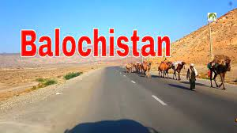

Punjab
India comprises of 28 states and one of them in the state of Punjab. It is located in the northwestern part of the country. The term ‘Punjab’ comes from the Persian language. Panj means five and ab mean river. Thus, it means the land of five rivers. The state gets this name because it comprises of five rivers. They are Jhelum, Chenab, Ravi, Beas, and Sutlej. In the Essay on Punjab, we will go through the state in a detailed manner.
Sindh
Sindh is also proud of having acquired fame as Bab-ul-Islam (Gateway to Islam in the Indo-Pakistan subcontinent). At the time of the independence from the British occupation in August 1947, the population of Sindh was estimated at 5.5 million. Today, after the passage of fifty years the population of the province stands around 40 million souls, a half of whom now live in the urban centres like Hyderabad, Sukkur, Mirpurkhas, Tando Adam, Nawabshah, Larkana, Shikarpur, Khairpur, Badin and other smaller towns. It is basically an agrarian province. The Indus is by far the most important river of the province. The classical name of the river was Sindhu (Sanskrit for an ocean) and Sindh province was created and sustained by the river, without which it would have been a desert. Its length is about 2,880 kilometers and nearly a third of that (about 944 Kms) traverses the province. The striking resemblance of Sindh to Egypt was noticed long before the existence in it of a comparable great prehistoric civilization was even suspected; the idiosyncrasy of its people when compared with Indians, is very marked. There is an ancient saying "Just as Egypt is the gift of Nile, Sindh is the gift of the Indus".

Blochastan
Balochistan (Urdu: صوبہ بلوچستان) is a province in Pakistan. The capital of Balochistan is Quetta. Balochistan has a population of about 10 million people and an area of 134,051 mi2 or (347,190 km2). It covers 45% of Pakistani territory; in terms of area the province of Balochistan is greater in area than Republic of the Congo but smaller than Germany.
Baluchistan (Chief commissioners province) - seceded from British India and became part of Pakistan in 1947. On the 30th of June in 1947 the Khan of Kalat joined Pakistan; tribal gathering and municipality of Quetta also declared for Pakistan. Baluchistan States Union - The BSU was formed after the formal Accession of four individual princely states into the new Dominion of Pakistan on the 31st of March in 1948, apart from the enclave of Gwadar that was in cessation from Oman to Pakistan on the 8th of September in 1958. Both CCP & BSU became the New Province of Balochistan on the 1st of July in 1970, after the dissolution of the former West Pakistan and is an “Integral Part of Pakistan”
Sarhad
Sarhad Paar is a 2006 Indian Hindi action drama film directed by Raman Kumar and produced by Goldie Tucker. The film stars Sanjay Dutt, Tabu, and Mahima Chaudhry as main characters, with Rahul Dev portraying the main villain.[1][2] The script was co-written by veteran actor Akash Khurana, who also plays a pivotal supporting character in the film.
Lahore
Sindh is also proud of having acquired fame as Bab-ul-Islam (Gateway to Islam in the Indo-Pakistan subcontinent). At the time of the independence from the British occupation in August 1947, the population of Sindh was estimated at 5.5 million. Today, after the passage of fifty years the population of the province stands around 40 million souls, a half of whom now live in the urban centres like Hyderabad, Sukkur, Mirpurkhas, Tando Adam, Nawabshah, Larkana, Shikarpur, Khairpur, Badin and other smaller towns. It is basically an agrarian province. The Indus is by far the most important river of the province. The classical name of the river was Sindhu (Sanskrit for an ocean) and Sindh province was created and sustained by the river, without which it would have been a desert. Its length is about 2,880 kilometers and nearly a third of that (about 944 Kms) traverses the province. The striking resemblance of Sindh to Egypt was noticed long before the existence in it of a comparable great prehistoric civilization was even suspected; the idiosyncrasy of its people when compared with Indians, is very marked. There is an ancient saying "Just as Egypt is the gift of Nile, Sindh is the gift of the Indus".
Fasailabad
India comprises of 28 states and one of them in the state of Punjab. It is located in the northwestern part of the country. The term ‘Punjab’ comes from the Persian language. Panj means five and ab mean river. Thus, it means the land of five rivers. The state gets this name because it comprises of five rivers. They are Jhelum, Chenab, Ravi, Beas, and Sutlej. In the Essay on Punjab, we will go through the state in a detailed manner.
Sargoda
Sarhad Paar is a 2006 Indian Hindi action drama film directed by Raman Kumar and produced by Goldie Tucker. The film stars Sanjay Dutt, Tabu, and Mahima Chaudhry as main characters, with Rahul Dev portraying the main villain.[1][2] The script was co-written by veteran actor Akash Khurana, who also plays a pivotal supporting character in the film.
Multan
Balochistan (Urdu: صوبہ بلوچستان) is a province in Pakistan. The capital of Balochistan is Quetta. Balochistan has a population of about 10 million people and an area of 134,051 mi2 or (347,190 km2). It covers 45% of Pakistani territory; in terms of area the province of Balochistan is greater in area than Republic of the Congo but smaller than Germany.
Baluchistan (Chief commissioners province) - seceded from British India and became part of Pakistan in 1947. On the 30th of June in 1947 the Khan of Kalat joined Pakistan; tribal gathering and municipality of Quetta also declared for Pakistan. Baluchistan States Union - The BSU was formed after the formal Accession of four individual princely states into the new Dominion of Pakistan on the 31st of March in 1948, apart from the enclave of Gwadar that was in cessation from Oman to Pakistan on the 8th of September in 1958. Both CCP & BSU became the New Province of Balochistan on the 1st of July in 1970, after the dissolution of the former West Pakistan and is an “Integral Part of Pakistan”
Fasailabad
India comprises of 28 states and one of them in the state of Punjab. It is located in the northwestern part of the country. The term ‘Punjab’ comes from the Persian language. Panj means five and ab mean river. Thus, it means the land of five rivers. The state gets this name because it comprises of five rivers. They are Jhelum, Chenab, Ravi, Beas, and Sutlej. In the Essay on Punjab, we will go through the state in a detailed manner.